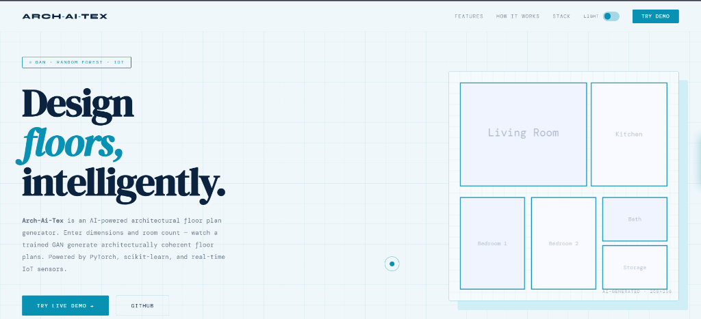
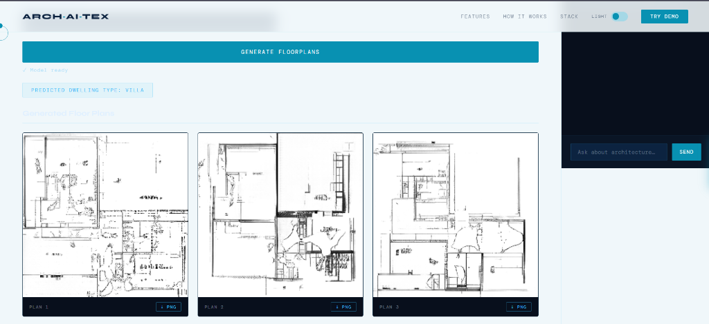

02 / Generative AI & Hardware
Arch-Ai-Tex
AI-powered floor-plan generation combining GAN-based image generation, Random Forest layout optimization, semantic segmentation, and real-time room measurement via Arduino Mega + ESP32 sensors.


What It Is
Arch-Ai-Tex is a full-stack, AI-powered architectural assistant that automates the generation of coherent floor plans. Instead of relying on a black-box prompt, it provides three distinct generation modes:
1. In-Browser Client GAN: Powered by an ONNX runtime model (generator.onnx) running 100% client-side in the browser on GitHub Pages.
2. Optimized Layout Engine: A Random Forest regressor combined with geometric heuristic constraints that calculates realistic room aspect ratios based on target square footage, room counts, and property type.
3. Physical IoT Telemetry: An Arduino Mega + ESP32 rig that captures real-world wall dimensions with ultrasonic, PIR, and infrared sensors to seed layout dimensions directly into the models.
Why It Was Built
Creating architectural plans is slow and requires specialized CAD expertise, while standard generative image models frequently hallucinate non-functional layouts (rooms without doors, floating walls, or impossible geometric ratios).
Arch-Ai-Tex was engineered to solve this by anchoring deep generative networks to rigorous geometric boundaries: combining GAN image generation with Random Forest area prediction, semantic wall segmentation, and direct physical sensor telemetry.
Multi-Tier Architecture
Key Contributions & Engineering
- ONNX Web Model Port: Converted the trained PyTorch generator into an optimized ONNX graph, running real-time generative neural networks directly in user web browsers.
- Random Forest Spatial Heuristic: Trained a scikit-learn regressor to predict room-area distributions (bedrooms, kitchen, living, bathrooms) with strict containment logic.
- Dual Microcontroller Hardware Stack: Wrote firmware for Arduino Mega and ESP32 with multi-sensor telemetry over serial/Wi-Fi to map physical room boundaries.
- Interactive Web & Streamlit Frontends: Shipped both a static browser deployment on GitHub Pages and a feature-rich Streamlit application for deep parameter tuning.
Results & Impact
Demonstrated that neural generative modeling coupled with machine learning regression can generate structurally plausible, constraint-compliant architectural drawings. The project has earned 500+ visitors and serves as an interactive showcase of hardware-AI convergence.